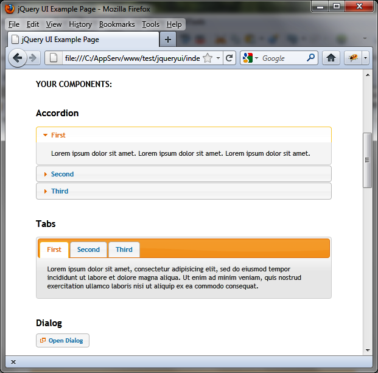
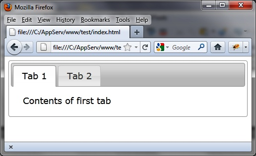

{% include JB/setup %}
{% raw %}
<div>
<div class="book" title="Which Files Should We Include in Our HTML Pages?"><div class="book"><div class="book"><div class="book"><h1 class="title2"><a id="which_files_should_we_include_in_our_htm" class="calibre1"></a>Which Files Should We Include in Our HTML Pages?</h1></div></div></div><p class="calibre7">In the previous sections, we have seen that jQuery UI is made up of
    different CSS and JavaScript files. In addition, some files are
    compressed, while others are not. Hence the question: which files should
    we include in our HTML pages to make use of jQuery UI?</p><div class="book" title="Uncompressed Files"><div class="book"><div class="book"><div class="book"><h2 class="title5"><a id="uncompressed_files" class="calibre1"></a>Uncompressed Files</h2></div></div></div><p class="calibre7">Uncompressed files are located in the <em class="calibre4">development-bundle</em> directory, under the
      jQuery UI installation directory (<em class="calibre4">jqueryui</em>).</p><div class="book"><div class="figure"><a id="the_ui-lightness_theme" class="firstname"></a><div class="book"><div class="book"><a id="I_mediaobject1_d1e500" class="firstname"></a></div></div><p class="title4">Figure 1-4. The ui-lightness theme</p></div></div><div class="book" title="JavaScript files"><div class="book"><div class="book"><div class="book"><h3 class="title6"><a id="javascript_files" class="calibre1"></a>JavaScript files</h3></div></div></div><p class="calibre7">The <em class="calibre4">ui</em> directory (located
        under <em class="calibre4">development-bundle</em>)
        contains the JavaScript files. The <em class="calibre4">jquery.ui.core.js</em> file includes the basic
        features (mandatory), while other files will be included only if
        required. The file ending in <em class="calibre4">custom.js</em> (e.g., <em class="calibre4">jquery-ui-1.8.16.custom.js</em>) brings together
        all the JavaScript files and eliminates the need to include each
        separately. The <em class="calibre4">minified</em>
        directory (located under <em class="calibre4">ui</em>)
        contains the same files in compressed format.</p></div><div class="book" title="CSS files"><div class="book"><div class="book"><div class="book"><h3 class="title6"><a id="css_files" class="calibre1"></a>CSS files</h3></div></div></div><p class="calibre7">The <em class="calibre4">themes</em> directory
        (located under <em class="calibre4">development-bundle</em>) contains the CSS files.
        It consists of various directories, each containing themes (e.g., the
        <em class="calibre4">base</em>, <em class="calibre4">smoothness</em>, and <em class="calibre4">ui-lightness</em> directories). Each theme
        includes an <em class="calibre4">images</em> directory and
        other CSS files.</p><p class="calibre7">The <em class="calibre4">jquery.ui.core.css</em> file
        contains basic functionality (required), while other files will be
        included only if they are required. The <em class="calibre4">jquery.ui.theme.css</em> file contains the
        definition of the theme itself (required).</p><p class="calibre7">The <em class="calibre4">jquery.ui.base.css</em> file
        includes all of the files in the <em class="calibre4">development-bundle</em> directory except
        <em class="calibre4">jquery.ui.theme.css</em>. The
        <em class="calibre4">jquery.ui.all.css</em> file includes
        all files (that is to say, <em class="calibre4">jquery.ui.base.css</em> and <em class="calibre4">jquery.ui.theme.css</em>).</p><p class="calibre7">Finally, the file ending with <em class="calibre4">custom.css</em> (e.g., <em class="calibre4">jquery-ui-1.8.16.custom.css</em>) includes all
        CSS files and eliminates the need to include each separately (it is
        identical to <em class="calibre4">jquery.ui.all.css</em>,
        except that it includes other files via CSS directives, while
        <em class="calibre4">custom.css</em> physically includes
        every line of all files).</p></div><div class="book" title="Sample HTML page including uncompressed files"><div class="book"><div class="book"><div class="book"><h3 class="title6"><a id="sample_html_page_including_uncompressed" class="calibre1"></a>Sample HTML page including uncompressed files</h3></div></div></div><p class="calibre7">Here we want to display a simple page with two tabs. The main
        JavaScript file will be <em class="calibre4">jquery.ui.tabs.js</em> and the main CSS file
        will be <em class="calibre4">jquery.ui.tabs.css</em>. The
        main page will include the following base files:</p><a id="I_programlisting1_d1e610" class="firstname"></a><pre class="programlisting">&lt;script src = "jquery.js"&gt;&lt;/script&gt;
&lt;script src = "jqueryui/development-bundle/ui/jquery.ui.core.js"&gt;&lt;/script&gt;
&lt;script src = "jqueryui/development-bundle/ui/jquery.ui.widget.js"&gt;&lt;/script&gt;
&lt;script src = "jqueryui/development-bundle/ui/jquery.ui.tabs.js"&gt;&lt;/script&gt;

&lt;link rel=stylesheet type=text/css
      href=jqueryui/development-bundle/themes/smoothness/jquery.ui.core.css /&gt;
&lt;link rel=stylesheet type=text/css
      href=jqueryui/development-bundle/themes/smoothness/jquery.ui.theme.css /&gt;
&lt;link rel=stylesheet type=text/css
      href=jqueryui/development-bundle/themes/smoothness/jquery.ui.tabs.css /&gt;</pre><p class="calibre7">The <em class="calibre4">jquery.js</em> file is here
        at the same level as the <em class="calibre4">jqueryui</em>
        directory<em class="calibre4">.</em> This file is the
        standard jQuery JavaScript file.</p><p class="calibre7">The <em class="calibre4">core.js</em> file is
        mandatory, while the <em class="calibre4">tabs.js</em> file
        requires the inclusion of <em class="calibre4">widget.js</em> (as indicated in the <em class="calibre4">tabs.js</em> file).</p><p class="calibre7">The <em class="calibre4">core.css</em> file is
        mandatory, as is the <em class="calibre4">theme.css</em>
        file. The <em class="calibre4">tabs.css</em> file contains
        specific tabs definitions.</p><p class="calibre7">Now that we have the basic building blocks for the page, let’s
        create and label two tabs and place some text in each. The following
        code goes directly below the previous code that calls the base
        files.</p><a id="I_programlisting1_d1e651" class="firstname"></a><pre class="programlisting">&lt;div id=tabs&gt;
  &lt;ul&gt;
    &lt;li&gt;&lt;a href=#tab1&gt;Tab 1&lt;/a&gt;&lt;/li&gt;
    &lt;li&gt;&lt;a href=#tab2&gt;Tab 2&lt;/a&gt;&lt;/li&gt;
  &lt;/ul&gt;
  &lt;div id=tab1&gt;Contents of first tab&lt;/div&gt;
  &lt;div id=tab2&gt;Contents of the second tab&lt;/div&gt;
&lt;/div&gt;

&lt;script&gt;

$("#tabs").tabs();

&lt;/script&gt;</pre><p class="calibre7">The result of this script (an HTML page with two tabs) is shown
        in <a class="ulink" href="ch01s04.html#our_first_program_using_jquery_ui" title="Figure 1-5. Our first program using jQuery UI">Figure 1-5</a>.</p><div class="book"><div class="figure"><a id="our_first_program_using_jquery_ui" class="firstname"></a><div class="book"><div class="book"><a id="I_mediaobject1_d1e660" class="firstname"></a></div></div><p class="title4">Figure 1-5. Our first program using jQuery UI</p></div></div></div></div><div class="book" title="Compressed Files"><div class="book"><div class="book"><div class="book"><h2 class="title5"><a id="compressed_files" class="calibre1"></a>Compressed Files</h2></div></div></div><p class="calibre7">The use of compressed files reduces the load time of HTML
      pages.</p><div class="book" title="JavaScript files"><div class="book"><div class="book"><div class="book"><h3 class="title6"><a id="javascript_files-id1" class="calibre1"></a>JavaScript files</h3></div></div></div><p class="calibre7">The <em class="calibre4">js</em> directory (located
        under the jQuery UI installation directory, here <em class="calibre4">jqueryui</em>) contains the JavaScript files.
        Only the <em class="calibre4">jquery-ui</em>-<em class="calibre4">1.8.16</em>.<em class="calibre4">custom.min.js</em> file is needed here. The
        other file in the directory is the compressed version of
        jQuery.</p></div><div class="book" title="CSS files"><div class="book"><div class="book"><div class="book"><h3 class="title6"><a id="css_files-id1" class="calibre1"></a>CSS files</h3></div></div></div><p class="calibre7">The <em class="calibre4">css</em> directory (located
        under the jQuery UI installation directory, here <em class="calibre4">jqueryui</em>) contains a subdirectory for each
        CSS theme installed (e.g., the <em class="calibre4">smoothness</em> and <em class="calibre4">ui-lightness</em> directories).</p><p class="calibre7">Each theme includes an <em class="calibre4">images</em> directory and a CSS file to be
        included in the HTML page. This is the same file ending with <em class="calibre4">custom.css</em> (e.g., <em class="calibre4">jquery-ui</em>-<em class="calibre4">1.8.16</em>.<em class="calibre4">custom.css</em>) as in the compressed
        version.</p></div><div class="book" title="Sample HTML page including compressed files"><div class="book"><div class="book"><div class="book"><h3 class="title6"><a id="sample_html_page_including_compressed_fi" class="calibre1"></a>Sample HTML page including compressed files</h3></div></div></div><p class="calibre7">Here, we want to display a simple page with two tabs (as
        before):</p><a id="I_programlisting1_d1e730" class="firstname"></a><pre class="programlisting">&lt;script src = jquery.js&gt;&lt;/script&gt;
&lt;script src = jqueryui/js/jquery-ui-1.8.16.custom.min.js&gt;&lt;/script&gt;

&lt;link rel=stylesheet type=text/css
      href=jqueryui/css/smoothness/jquery-ui-1.8.16.custom.css /&gt;</pre><p class="calibre7">Only two files are now required in addition to the <em class="calibre4">jquery.js</em> file:</p><div class="book"><ul class="itemizedlist"><li class="listitem"><p class="calibre7">The jQuery UI JavaScript global file (<em class="calibre4">jquery-ui-1.8.16.custom.min.js</em>)</p></li><li class="listitem"><p class="calibre7">The overall CSS jQuery UI file associated to the style used
            (<em class="calibre4">smoothness/jquery-ui-1.8.16.custom.css</em>,
            associated with smoothness theme)</p></li></ul></div><p class="calibre7">Now add the same HTML code that we used earlier to create,
        label, and populate the tabs:</p><a id="I_programlisting1_d1e752" class="firstname"></a><pre class="programlisting">&lt;div id=tabs&gt;
  &lt;ul&gt;
    &lt;li&gt;&lt;a href=#tab1&gt;Tab 1&lt;/a&gt;&lt;/li&gt;
    &lt;li&gt;&lt;a href=#tab2&gt;Tab 2&lt;/a&gt;&lt;/li&gt;
  &lt;/ul&gt;
  &lt;div id=tab1&gt;Contents of first tab&lt;/div&gt;
  &lt;div id=tab2&gt;Contents of the second tab&lt;/div&gt;
&lt;/div&gt;

&lt;script&gt;

$("#tabs").tabs();

&lt;/script&gt;</pre><p class="calibre7">The result is the same as before.</p></div></div></div></div>

{% endraw %}

